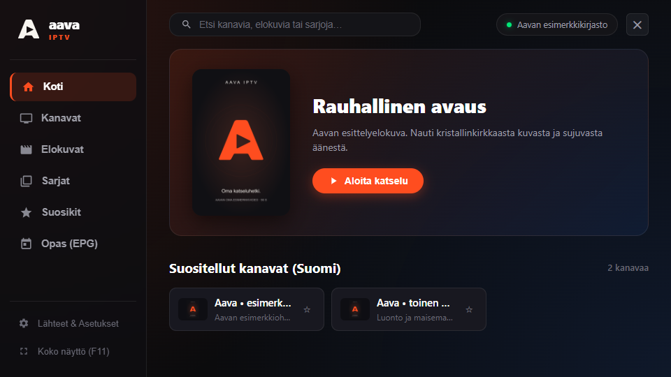

Kirjasto, joka pysyy mukana
Selaa kanavia ryhmittäin, etsi elokuvia ja sarjoja sekä poimi suosikit talteen. Kesken jääneen elokuvan katselua voi jatkaa omasta kohdasta.
Aava IPTV · Taipale IT
Kanavat, elokuvat ja sarjat samassa Aavassa. Lisää oma IPTV-palvelusi ja löydä katsottava selkeästä, tummasta kirjastosta.
Windows-esiversio nyt · Mac-versio viimeistelyssä
Selainversion esiversio · oma HTTPS- ja CORS-yhteensopiva lähde tarvitaan.

Sinun sisältösi. Aavan soitin. Aava ei sisällä kanavia, elokuvia tai IPTV-tilausta. Käyttöön tarvitaan oma Xtream Codes- tai M3U-lähde ja oikeus katsottavaan sisältöön.
Windows-versiossa mukana
Selaa kanavia ryhmittäin, etsi elokuvia ja sarjoja sekä poimi suosikit talteen. Kesken jääneen elokuvan katselua voi jatkaa omasta kohdasta.
Vaihda lähetyksen ääni- ja tekstitysraitoja. Tuo oma SRT/VTT-tekstitys tai hae tekstityksiä OpenSubtitlesista omalla API-avaimella.
Jatka katselua PiP-ikkunassa muiden ikkunoiden päällä tai siirry koko näyttöön. Tauko, kanavanvaihto ja kuvasuhde löytyvät soittimen säätimistä.
Aava omalle koneellesi
Lataa oman käyttöjärjestelmäsi sovellus tai avaa Aava suoraan selaimeen. Asennuspaketit tulevat Aavan GitHub-julkaisuista.
Windows 10 (2004) / Windows 11 · x64
Lataa WindowsilleVersio 0.4.5 · ZIP-paketti
Pura koko paketti kansioon ja avaa Aava.exe. Microsoft Edge WebView2 Runtime tarvitaan. Tämä esiversio on ilman julkaisijan Windows-allekirjoitusta.
Julkaisutiedot ja tarkistussumma ↗Oma natiivi macOS-sovellus
Lataus avataan testatun paketin valmistuttua.
Mac-versiota viimeistellään ja testataan Macilla. Allekirjoitetun asennuspaketin lataus tulee tähän samaan kohtaan.
Tietokone, puhelin tai tabletti · ei asennusta
Avaa selaimessaOma kirjasto suoraan välilehdessä
Lisää oma Xtream Codes- tai M3U-lähde. Selainversion esiversio tarvitsee HTTPS- ja CORS-yhteensopivan palvelun. Tunnukset säilyvät vain avoimen välilehden muistissa.
Selainversion ohjeet ja rajat ↗Windowsin ohjelmaopas on tässä versiossa kanavalista. AirPlay/Chromecast, moninäkymä ja profiilit eivät vielä kuulu Windows-esiversioon. Katso ominaisuudet ja rajat ↗
Ensimmäinen katseluhetki
Käyttöönotto, lähteet ja toiston ohjeet löytyvät Aavan tukisivulta.